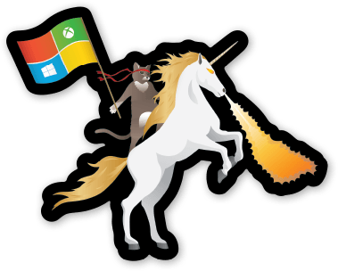

This summer, I will make my first foray into the field of making things that people want to pay for. This is in direct contrast to most of my coursework in the past year, which has been about topics that you couldn’t even pay the average person to be interested in. I know that a lot of university students are eager to learn about how to get an internship at one of the coveted “Big 4”, so I thought I’d share my experience with navigating the application process of a Microsoft Explore internship.

First, a confession: I’m a terrible coder. This isn’t to say that I don’t enjoy solving problems, but I find the process of becoming familiar with libraries and the quirks of individual programming languages to be tedious, and debugging C makes me want to rip my hair out. I do well in my systems courses, but I’m not inspired by them like some of my classmates.
I love figuring things out though, and seeing my ideas affect the real world. Coding is one of the most effective ways I’ve found of doing so. So I often tell people that I enjoy coding, even though the actual process of implementing and debugging programs is more of a necessary evil than an invigorating experience.
This love of figuring things out and making things led me to do a handful of hackathons in the fall semester of my second year. At one of these hackathons, I encountered a Microsoft recruiter who gave me his business card and told me to email him my resume. I did so, and received an email a few weeks later to set up a phone call to “discuss an Explore Internship”. I didn’t really know what that meant and had two midterms on the proposed day, so I went into that phone call with a solid understanding of the first five weeks of my probability course and zero idea of what the call itself was going to be about.
It turned out to be a soft-skills type interview where I was asked about my personal projects and teamwork skills. I was still kind of preoccupied by my midterms that day so wasn’t stressed about the interview at all, and maybe that carefree attitude was the key to getting moved on to the actual technical interview phase. My advice to anyone doing this kind of interview is to have answers to common questions already prepared, since I didn’t and had to do a lot of thinking on the spot.
If there’s one thing I’ve learned from this experience, it is that you should always apply to jobs at tech companies, because they’re very very rich and often give you free dinners and trips to cool cities. Microsoft was no exception. For my interviews, I got an all-expenses paid trip to Seattle, which was a hoot. I got to check out some cool museums and markets around the city after my interviews in the morning, and ate much nicer food than my university student budget usually allowed (which to be fair isn’t saying much).
The interviews themselves were super fun. As I said before, I love solving problems, and that was basically all I was asked to do for the first 2 of my 3 interviews. Since Explore internships are aimed at second and first years, the questions themselves were fairly trivial, although one was less so and actually rather fun. (I was worried I’d messed it up at first because I initially wrote my solution as a one-line summation and had to be prompted to write the actual code for it.) My final interview was 45 minutes of chatting with the woman who will be my manager this summer about how I implemented one of my hackathon projects, followed by her describing some of the cool machine learning projects that the Office365 team is working on and how great Microsoft is.
I was emailed two days later to set up a phone call in which I received an offer. Overall the experience was a blast and I would honestly love to do it again just for fun.